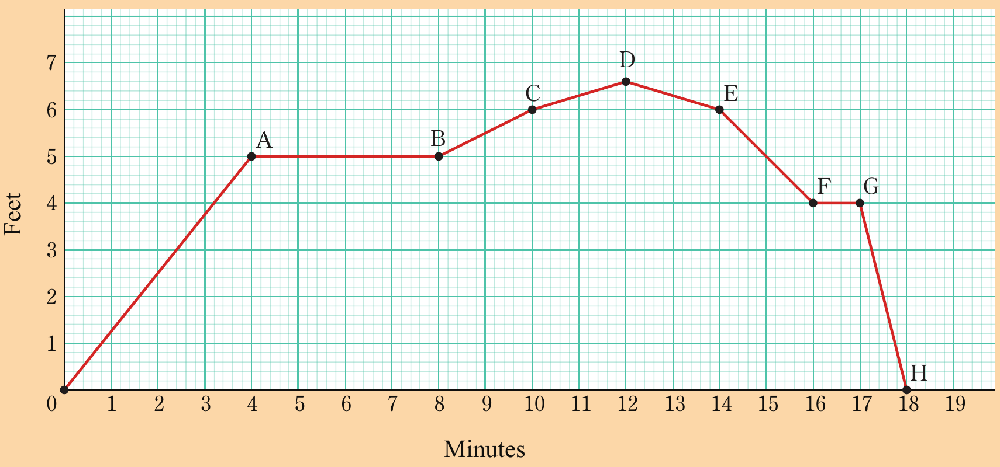

Exercise 1.1
What rate in metres per second is equivalent to a speed of 45 kilometres per hour?
A car covers a distance of 200 kilometres in 60 minutes.
What is the speed of the car in metres per second?
A water tap takes 10 minutes to fill a 500 litres tank.
Find the rate of flow of water in litres per second.
If premium petrol costs Tshs 2,500 per litre, how many litres can be purchased for Tshs 10,000?
Find the rate in kilometres per hour if a racing car travels kilometres in 35 minutes.
Mwajuma walks 6 kilometres in 1 hour and John walks the same distance in 2 hours.
What are their walking speeds?
Who walks faster, and by how much?
A garden hose fills a 20 litre bucket in 4 minutes.
What is the rate of flow in litres per minute?
A car travels 400 km using 25 litres of fuel.
What is the car’s fuel efficiency in kilometres per litre?
Mr. Magoda’s salary increased from Tshs 800,000 to Tshs 1,000,000 in a year.
What is the rate of change of his salary?
The temperature in Mrs. Kidunula’s room increased from 15°C at 8 am to 25°C at 2 pm.
What was the average rate of temperature change per hour?
A car accelerates from 0 to 60 km/h in 10 seconds.
What is the rate of change of its speed in km/h per second?
Mr. Kilenzi’s heartbeat increased from 60 beats per minute to 120 beats per minute during exercise over 3 minutes.
What was the average rate of change in his heartbeats?
A family uses 80 GB of internet data in 30 days.
What is the average daily rate of data usage in GB per day?
Pipe X can fill a tank in 8 hours, while Pipe Y can fill it in 5 hours.
How long will it take to fill the tank if both pipes are opened simultaneously?
Pump A can fill a pool in 5 hours, Pump B in 4 hours, and Pump C in 10 hours.
How long will it take to fill the pool if all three pumps are operated at the same time?
Study the following figure which shows different altitudes (in thousands feet) attained by a plane and then answer the questions that follow.

(a) During the first 4 minutes of flight, the plane took off to the altitude shown by point A.
Estimate the rate of change in altitude.
(b) Between points E and F, the plane is descending.
Estimate the rate of change of altitude during this time.
(c) Is the rate of change in (b) positive or negative?
Give reasons for your answer.
(d) Find the rate of change in altitude between points C and D.
Is this rate greater or less than the rate between points D and E?
How does the graph visually show that the two rates are different?
(e) Can the rate of change between any two points be 0?
Briefly explain and give an example from the figure.
Ana and Lina can weed a garden in 2 hours.
Working alone, Ana can do the same work in 3 hours.
How long would Lina weed the garden alone?